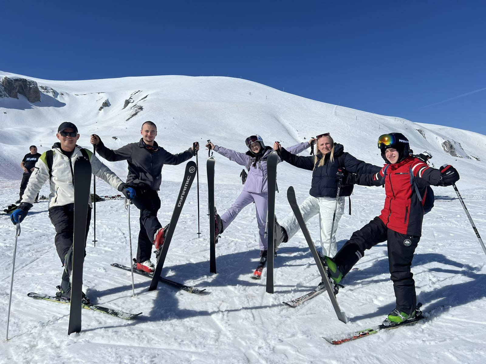
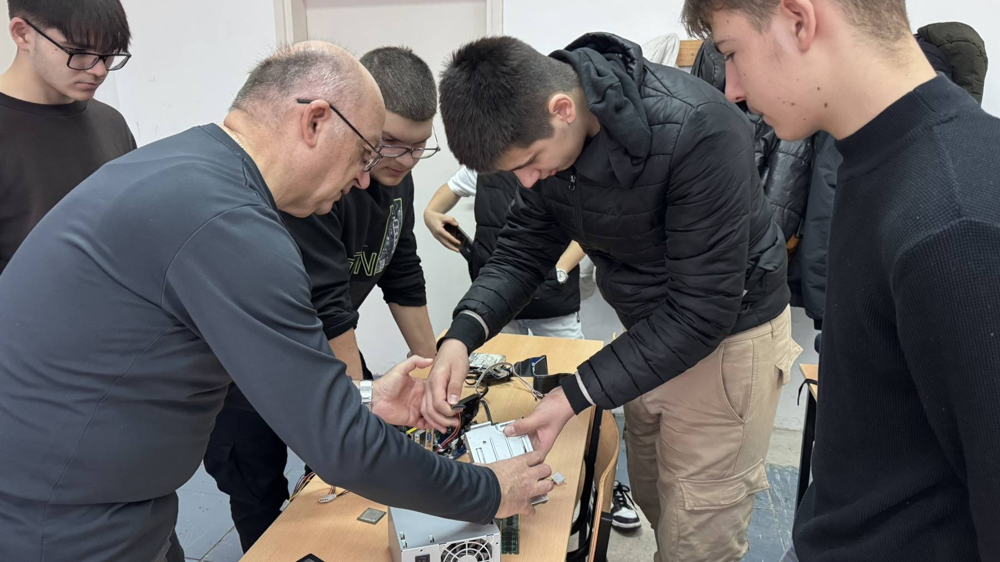
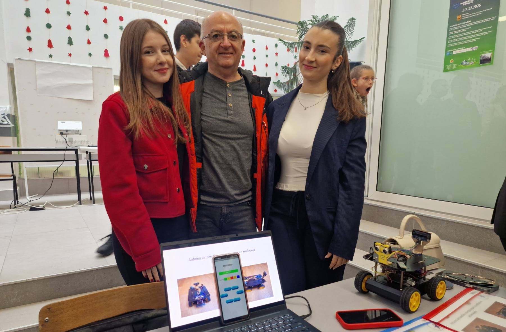
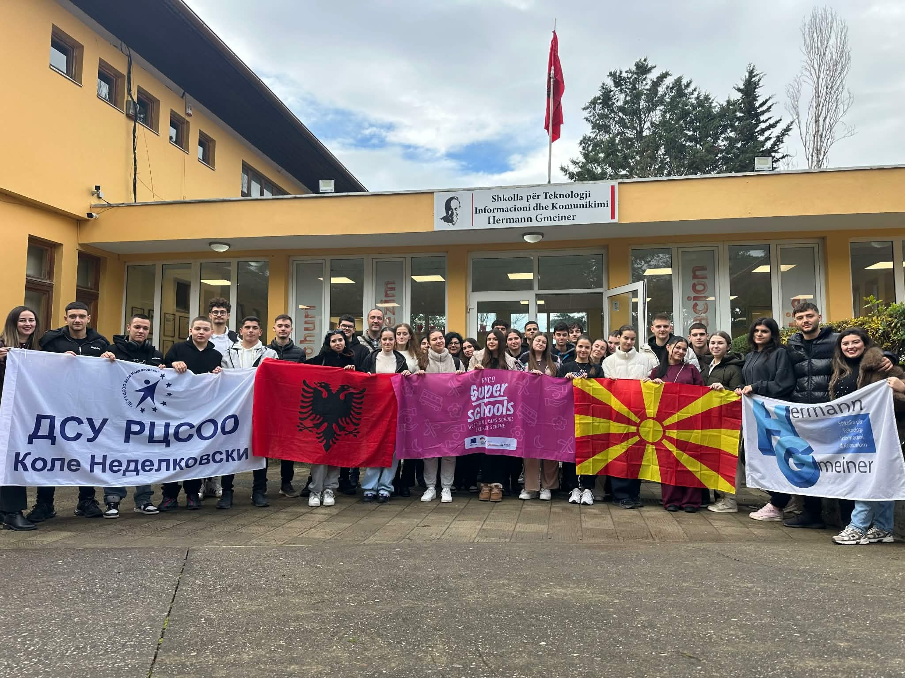
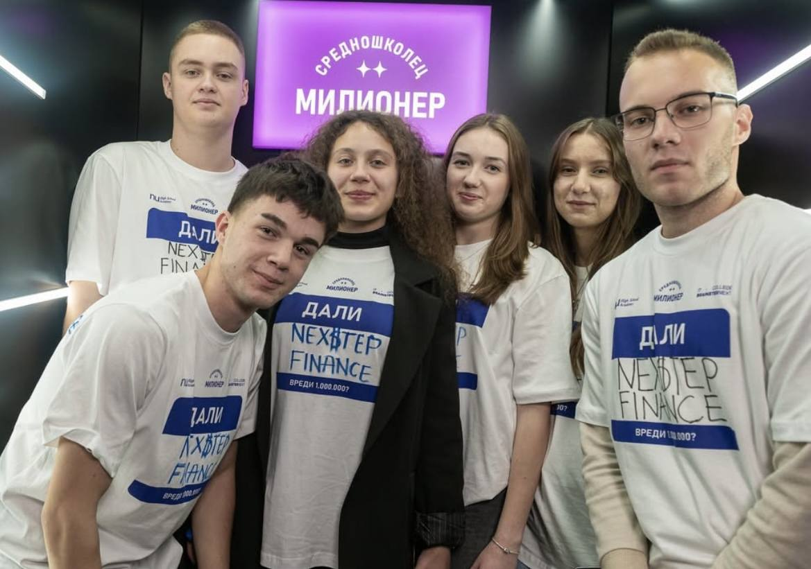
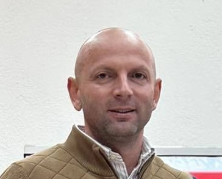

ДСУ РЦСОО „Коле Неделковски“ е водечка образовна институција во Велес со богата традиција
во стручното образование. Основано во 1965 година, училиштето непрекинато врши образовно-воспитна дејност.
Наша цел е да обезбедиме квалитетно образование што ќе ги подготви учениците за успешна кариера. Располагаме
со сопствена училишна зграда, машинска работилница, електро работилници, спортска сала и сите просторни
услови потребни за реализација на наставата.
Ученици во улога на врснички едукатори за
дуално образование
Учениците на ДСУ РЦСОО „Коле Неделковски“, Анѓела Колодезни, Матеа Христова,
Борјан Бузалковски и Кристијан Димовски, денеска спроведоа работилници за дуално образование со
деветоодделенци
Прочитај повеќе

Воншколски активности
1 Март 2026
Снежна авантура на Попова Шапка
Еднодневна снежна авантура на Попова Шапка за учениците на ДСУ РЦСОО
„Коле Неделковски“.Со многу насмевки, адреналин ...
Прочитај повеќе

Образование
5 Септември 2025
Промотивна кампања на ДСУ РЦСОО „Коле Неделковски“ низ велешките основни училишта
и околината
Учениците и наставниот кадар на ДСУ РЦСОО „Коле Неделковски“ во изминатиов
период спроведоа интензивна кампања за промоција на училиштето низ основните училишта во Велес, како и во
ООУ „Рајко Жинзифов“ – с. Оризари.
Прочитај повеќе

Натпревари
6 Декември 2025
Успешно претставени и наградени учениците на ДСУ РЦСОО „Коле Неделковски“ на
Макинова и Еконова
Нашите ученици освоија награди на државниот натпревар во електротехничка
струка. Натпреварот се одржа во Скопје и на него учествуваа ученици од цела Македонија.
Прочитај повеќе

Училишна размена
4 Декември 2025
Успешно завршена RYCO програма: Продубено пријателство и нови искуства во Тирана
Учениците на ДСУ РЦСОО „Коле Неделковски“ со голем успех ја реализираа
училишната размена со врсниците од училиштето „Херман Гмајнер“ во Тирана. Во рамките на програмата
поддржана од RYCO, нашите ученици активно учествуваа во тематски работилници каде ги презентираа
културата, традицијата и фолклорот на двете држави.
Прочитај повеќе

Настани
30 Ноември 2025
Извонреден успех на нашите ученици на државниот натпревар „Средношколец Милионер
Во изминатиов месец, ДСУ РЦСОО „Коле Неделковски“ со гордост беше
претставено на големиот државен натпревар „Средношколец Милионер“, организиран од Brainster. Во
конкуренција од дури 438 тимови од цела Македонија, нашите ученици преку тимовите „Nex$tep Finance“ и
„Wearly“ покажаа дека размислуваат смело, модерно и во чекор со потребите на младите.
Прочитај повеќе
За Нас
Што велат нашите поранешни ученици
Стручното образование тука е најсигурната инвестиција за иднината. Горд сум што
ова училиште ме подготви за сите животни предизвици.
Марко Колев
Поранешен ученик, Градоначалник на Општина Велес
Секаде во светот се почнува од нула, а за успех се потребни вештини. Ова
училиште е најдоброто место за да ги стекнете тие знаења.
Игор Здравковски
Поранешен ученик, Пратеник во Собрание
Како бизнисмен, мојот совет е: никогаш не се откажувајте! Секоја идеја може да
стане реалност, а најдоброто место за тој почеток е токму ова училиште.

Златко Љутков
Поранешeн ученик, Сопственик на Пододекор
„Коле Неделковски“ е најдобро училиште во градот и пошироко, што е доказ дека
луѓето што работат таму се на прав пат и училиштето е воздигнато на многу високо ниво.
Панче Ќумбев
Поранешен ученик, поранешен репрезентативец во фудбал
Уписи 2026/2027
Запишете се и станете дел од нас!
Отворете ги вратите кон успешна кариера со квалитетно стручно образование. Уписите се
реализираат во месец јуни.